Logging
This guide will go through how to log in PikeConsole, and what benefits it brings.
It is highly recommended that you have completed the Getting Started Guide before proceeding.
Or at the very least, the Privacy concern chapter.
🪵 How to log
Logging in PikeConsole is both easy and performant!
We will use the built in PikeLogger class, which automatically manages stuff like string optimization and target environments.
First, we create a new Node and call it TestLogger.
Then we'll make it log a simple "Hello world" to the console in the _Ready() method.
1 2 3 4 5 6 7 8 9 10 11 12 | |
If you start the game you'll see that the message is printed to the console!
❗ Caveats of using PikeLogger
You might\ve noticed that we needed to do a few extra steps here. Mainly passing a LogTarget and having the message be an interpolated string.
These restrictions are absolutely necessary in order for PikeConsole to strip and no-op logs in non-targeted environments.
It uses a modern .NET technique called String interpolation handlers which guarantees that strings will not build on non targeted environments, which increases performance and de-clutters the console overall.
⚪🟢 Log levels 🟡🔴
PikeLogger has several log levels (severities) to use for different scenarios.
In the following code example, we will expand on the previous code and show of each one in the _Ready() method.
1 2 3 4 5 6 7 8 9 10 11 12 13 14 15 16 17 18 | |
This leaves us with something like this:
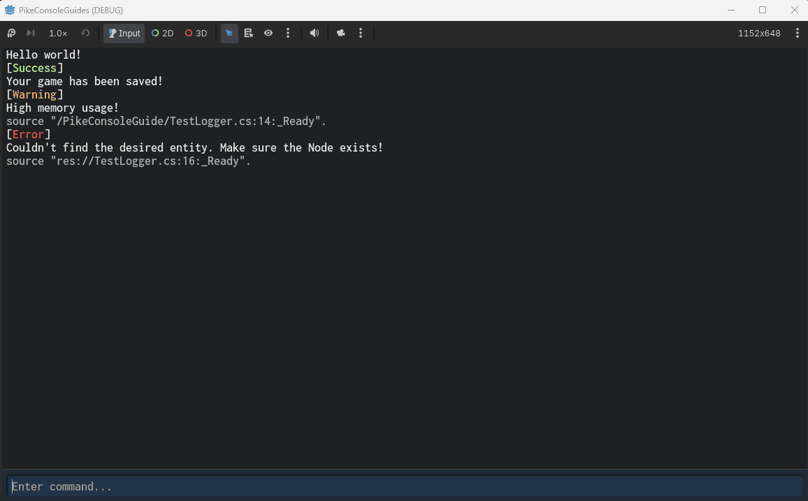
Notice how the warning and error automatically attached the source file and method.
This is part of the smart compile-time string literals!
All PikeLogger methods come with overrides for explicitly including or not including the path.
We can demonstrate this by adding a few more logs...
1 2 3 4 5 6 7 8 9 10 11 12 13 14 15 16 17 18 19 20 21 22 | |
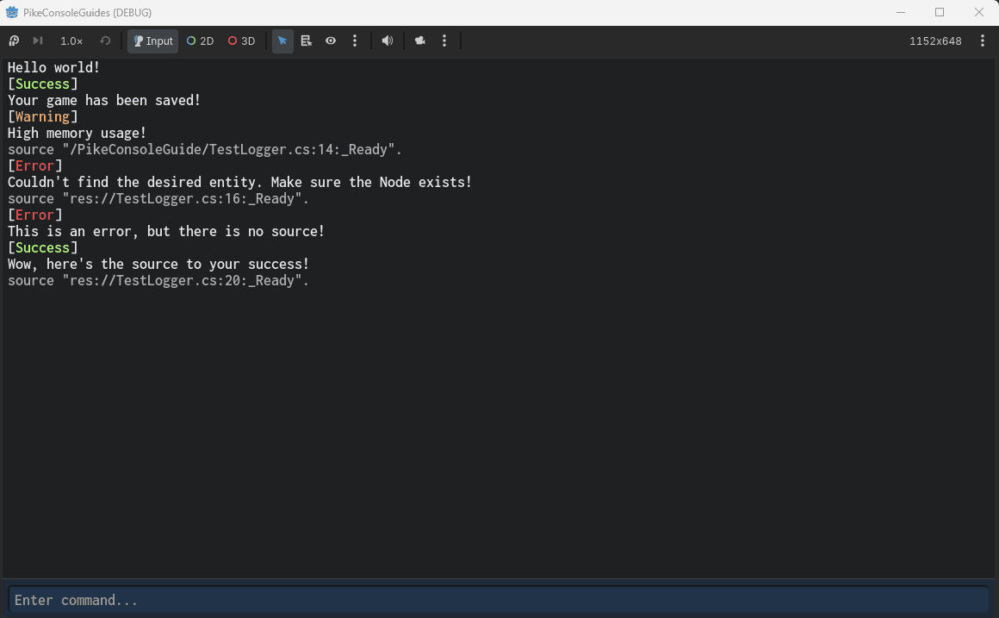
🏷️ Log tags
Log tags are simply metadata that you can add to the log so that other systems can do something with it.
PikeConsole uses log tags a lot in order to override headers and add things like styling capabilities to the frontend without crossing concerns.
These tags could also, in theory, be used to filter logs if you make a custom UI.
Note
Log tags are not to be confused with log levels. The LogLevel is decided by which method was called to emit the log, and is not affected by tags. Tags are a separate system with agnostic application!
In this example, we will create a Node called TagLogger. Attach the following code:
1 2 3 4 5 6 7 8 9 10 11 12 13 14 15 16 17 18 | |
PikeConsole's frontend will interperate these tags and automatically apply a fitting header (or not use a header inm the case of LogTags.NoHeader).
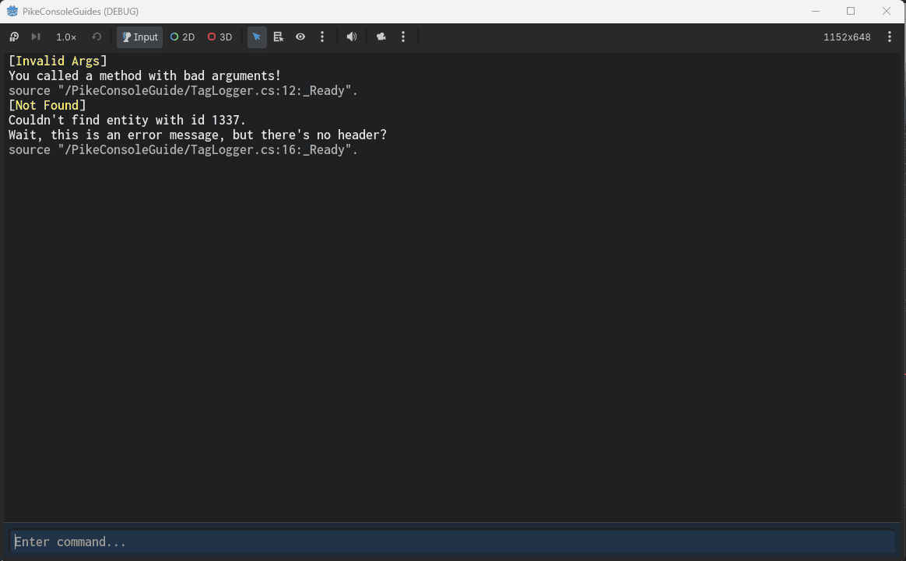
🧩 Making your own headers
You do not need to use the default headers that come with PikeConsole. There exists a native way to expand the tag system without touching the source code!
To do so go into your Goodt editor and navigate to addons > PikeConsole > Frontend > pike_console_ui.tscn.
In the scene tree, click on the LogStyler Node.
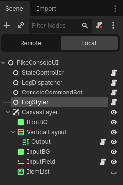
In the inspector, go to Header Overrides and add an element to the Header Overrides array.
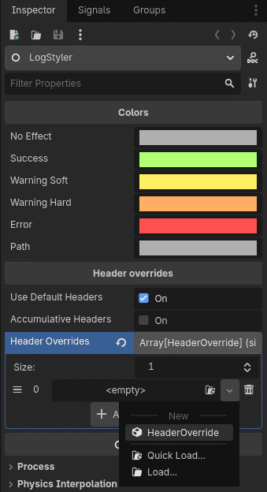
Expand the new HeaderOverride and select a tag, label and color.
In this example, I will use the tag custom_tag with the label MY CUSTOM TAG.
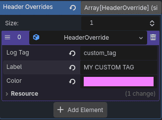
Now, adjust the code example from before and make the error use your own custom tag instead:
1 2 3 4 5 6 7 8 9 10 11 12 13 14 15 16 17 18 | |
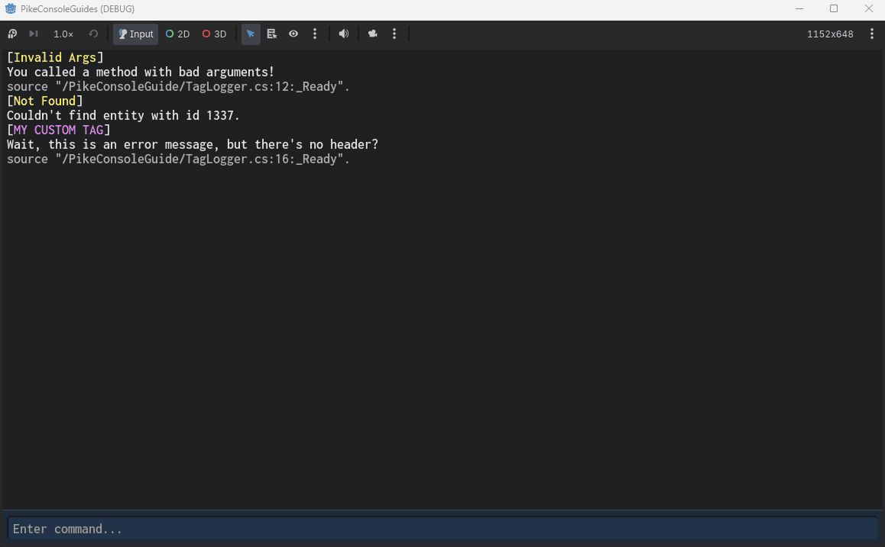
🤔 Why interpolated strings?
Forcing interpolated strings for all messages might seem overkill, but there is actually a good reason for it.
In this example we will intentionally freeze our project to demonstrate how PikeLogger operates.
Create a Node and call it CrasherLog, then apply the following code:
1 2 3 4 5 6 7 8 9 10 11 12 13 14 15 16 17 18 19 20 21 22 23 24 | |
As you can probably already tell, this is catastrophic and will completely freeze the main thread.
Playing this in a debug build (exported or through the editor) will crash the game.
That means the string is being processed and the method is trying to run.
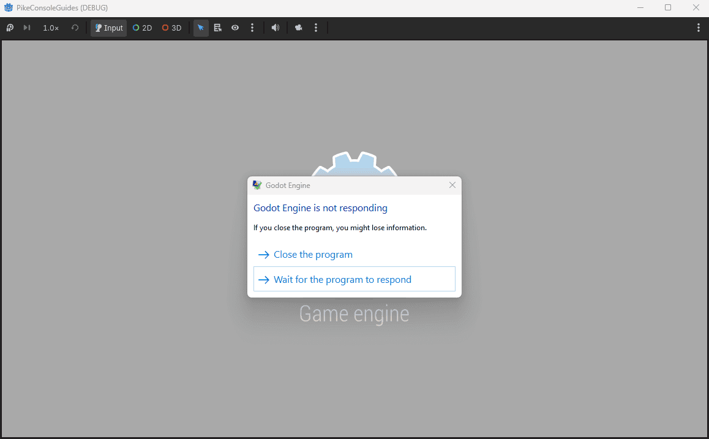
However, if we build the game as a release build and play, it will not crash!
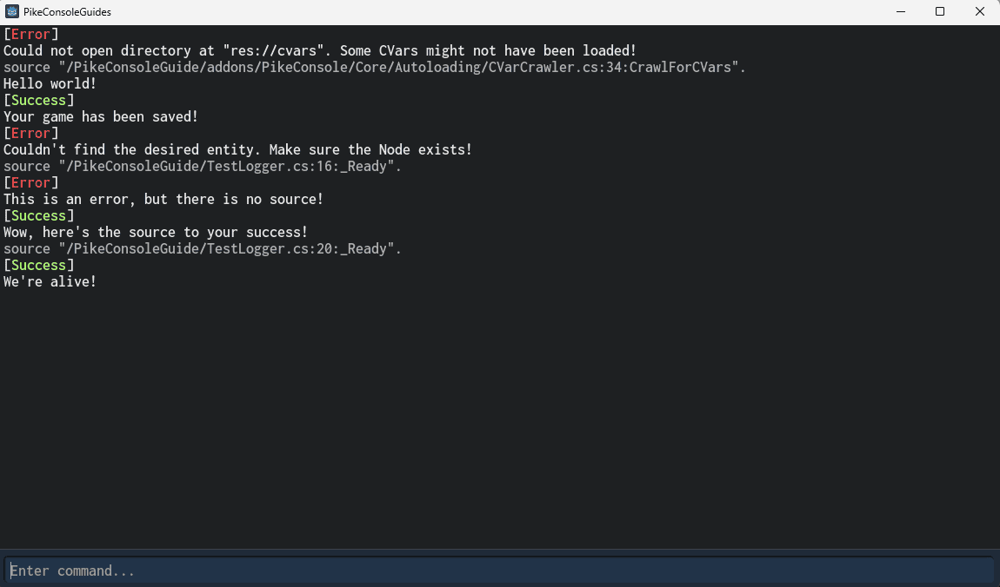
This means that because we used LogTarget.Debug, the game will not even process the string in a release build!
In this case we intentionally crashed the game to prove a point, but in a real world scenario you might compute a large amount of data and allocate memory to build a massive string of information, like network status, a snapshot of entity positions, etc...
That's processing power that your player is paying for, even though they can't even read the logs.
With PikeConsole all that goes away!
It is also easier for players to error report, as they can send the output from the console rather than having to navigate to their user directory to find the Godot log files generated by GD.Print.
Speaking of GD.Print
PikeLogger is meant as a full replacement and should be used instead of GD.Print in order to automatically save memory and performance. To mimic the effect of GD.Print without the performance costs, use the Editor LogTarget!
These methods will automatically become no-op in all compiled builds which increases performance.
📢 Automatic error routing
When an error occurs in the engine or code, PikeConsole will automatically print it to the runtime console.
Note
Errors and warnings pushed manually using GD.PushWarning and GD.PushError will also be printed.
This is for compatibility with old projects. Going forward, it's highly recomended to use PikeLogger.LogError / PikeLogger.LogWarning to reduce interop overhead!
To demonstrate this, create a Node and call it ErrorLogger. Attach the following code:
1 2 3 4 5 6 7 8 9 10 11 12 13 14 15 16 17 18 19 20 21 22 | |
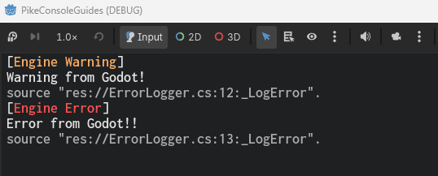
And because we're running from the editor, we get the added benefit of PikeLogger automatically routing the errors (with clickable links) in the output!
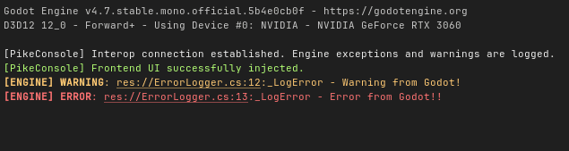
📙 Other resources
- Getting Started (Recommended)
- Best Practices (Recommended)
- Cvars
- Commands
- Aliases
- User Configs
- Video Guides